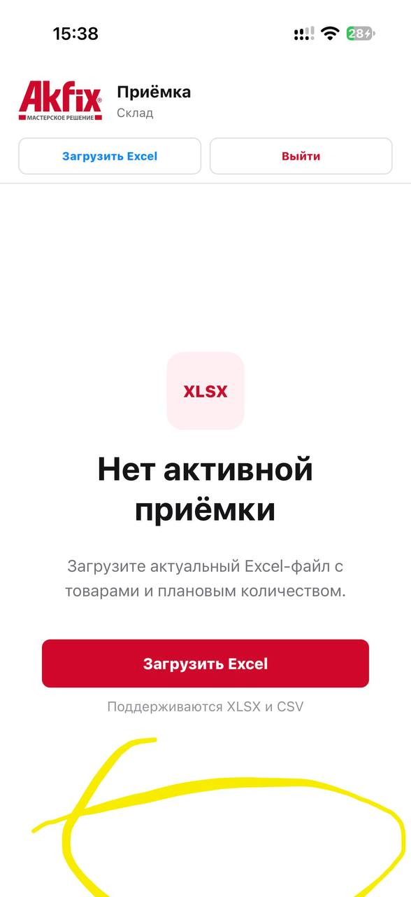

01Открой заказИз списка или по номеру02Проверь условияТовар, палеты, документы03Сделай фотоПриложение подскажет ракурсы04ЗавершиРезультат появится в истории
03
Приёмка из Excel — без ручного ввода
01ЗагрузитьXLSX или CSV02СверитьФакт с планом03РазместитьМесяц, год, ячейка04СохранитьРезультат приёмки

04
Сегодня → заказ → расписка
01Сверить номер заказа02Прочитать адрес и контакт03Сфотографировать расписку04Нажать «Груз отправлен»